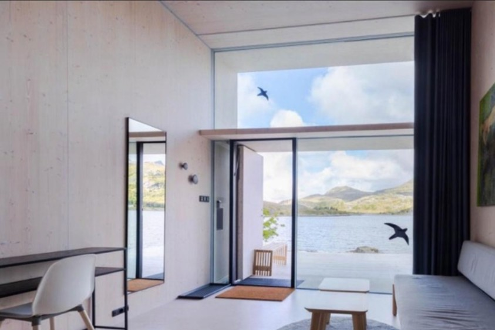
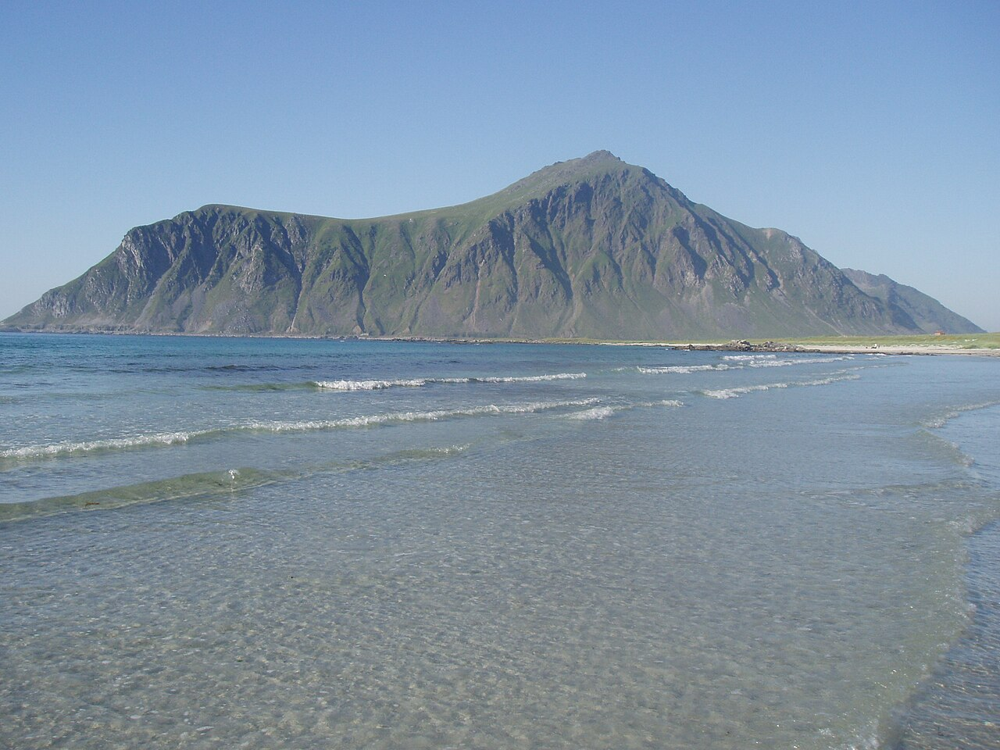

1. 最终判断
确认主线：罗弗敦优先，Henningsvær 以白天游为主，核心住宿夜留给 Ballstad、西部渔村和海滩追光。
把前面所有关于住宿选择、罗弗敦自驾路线、景点、极光、航班衔接、补给和注意事项的结论集中到一个页面。用于决策，不替代预订平台、航司和天气实况。
这份文件是“挪威相关 GPT 分析”的总汇页：先看最终判断和推荐路线，再用地图理解空间关系，最后进入住宿组合、极光、航班和注意事项。
确认主线：罗弗敦优先，Henningsvær 以白天游为主，核心住宿夜留给 Ballstad、西部渔村和海滩追光。
按 10/1-10/6 拆分每日安排，覆盖 EVE/OSL 航班、罗弗敦自驾、回撤和返程缓冲。
包含机场、住宿、景点、极光点、徒步点和补给点；底图使用本地离线瓦片。
逐项整理 Sandtorgholmen、Henningsvær、Hattvika、Ramberg、Nusfjord、Eliassen 等候选住宿。
解释为什么不必执着住 Henningsvær，什么时候可以 10/2 直接西移，以及如何减少夜路。
按路线顺畅度、极光、渔村特色、落地窗海景和换宿成本排列组合。
补充 Oceanview → Eliassen/Nusfjord → Hattvika、Jusnes 连住、Eliassen 视觉冲击等近期讨论结论。
按推荐程度、适合天气、游玩时长整理沿途渔村、海滩、极光点和短徒步点。
说明 10 月初可追光时段、预测方法、住宿选址逻辑和晴窗行动法。
整理 10/1、10/2 前往 EVE 与 10/5、10/6 返回 OSL 的取舍。
给出奥斯陆轻量玩法，以及卑尔根弗洛姆、特罗姆瑟、哈当厄尔等非罗弗敦备选。
覆盖周日闭店、退改政策、补给、租车、晚到入住、房型视野和国际返程缓冲。
你的核心偏好是：少夜路、不走马观花、至少一晚开阔海滩等极光、至少一晚渔村/rorbu 特色住宿、可以换宿但不要牺牲体验。基于这个偏好，Henningsvær 是重要白天景点，但不是必须住宿锚点。
10/1 晚到 EVE 附近 → 10/2 白天 Henningsvær，晚上 Ballstad / Nusfjord / Ramberg → 10/3 特色渔村或 rorbu → 10/4 海滩追光夜 → 10/5 EVE 附近 → 10/6 早班回 OSL。
适合白天或黄昏游 2-3 小时：港口、足球场、咖啡馆、小店、桥和岛礁。早期建议住 Henningsvær，是为了保护第一天体力；在你明确“不介意换宿、想少回头路、想住处附近看极光”后，结论应更新为：游完 Henningsvær 后继续西移更合理。
10/4 是周日，餐饮和补给不能赌；10/6 国际返程日，不建议用 10:50/11:05 EVE→OSL 去卡 17:00 国际航班，除非你能接受更高风险。更稳是 10/6 06:15/06:30 早班，前一晚住 EVE 附近。
以下是我认为最适合你们的“稳健而不无聊”版本。它把 Henningsvær 作为白天重点，住宿夜留给中部基地、西部渔村和开阔海滩，最后回到 EVE 附近保护国际返程。
地图使用本地 Leaflet 与本地离线瓦片，打开 HTML 时不依赖海外底图。点位分为机场/过渡住宿、候选住宿、风景点、极光点、徒步点和补给点。
这部分专门汇总前面反复讨论过、最容易影响预订的判断。核心不是“哪个地方绝对最好”，而是把每一晚放在最匹配的体验上。
Henningsvær 的独特性主要在白天和黄昏：海上足球场、桥、码头、咖啡馆和小店。晚上住下确实舒服，但它不是最开阔的极光住宿点。如果 10/2 中午前后已开始进岛，白天游 2-3 小时后继续到 Ballstad / Nusfjord / Ramberg，更符合你“少回头路 + 多体验 + 住处附近看极光”的偏好。
可行，但要分条件：若 10/1 已住 EVE 附近、10/2 早取车，10/2 推到 Ballstad 最稳，推到 Nusfjord 或 Ramberg 是进取但成立。若 10/2 上午才从 Oslo 飞 EVE，再一路玩 Henningsvær 后去 Nusfjord / Ramberg，会明显偏满。
Henningsvær 到 Gimsøy / Hov 通常约 40-55 分钟，到 Eggum 通常 1 小时以上。支线弯道多、照明有限，雨风夜路压力会上升。既然你不想夜里多开，就应把关键追光夜直接放在 Ramberg / Flakstad / Skagsanden 或 Unstad 这类开阔海滩带。
| 住宿区域 | 白天是否足够 | 住下才有的价值 | 更适合你的用法 |
|---|---|---|---|
| Kabelvåg | 基本足够 | 安静、补给方便、比 Svolvær 更有老镇感 | 10/2 疲劳或预算友好过渡，不作为主惊艳点。 |
| Henningsvær | 2-3小时可覆盖核心 | 港口晚餐、夜色、小镇步行氛围 | 若第一天累就住；若状态好，白天游完西移。 |
| Ballstad | 不适合只打卡 | 真实渔港基地、厨房/餐饮/补给、去西部和海滩都方便 | 10/2 首选稳健住宿。 |
| Nusfjord | 白天可参观 | 游客散去后的黄昏、清晨、历史渔村沉浸感 | 10/3 最合适；10/2 只有在出发很顺时选。 |
| Reine / Hamnøy | 途经也能看经典画面 | 晨昏等光、住进 rorbu 的记忆点 | 适合 10/3 或 10/4 体验一晚，但别放最后回 EVE 前的高压夜。 |
| Ramberg / Flakstad / Skagsanden | 白天很美 | 少夜路守极光、风浪海滩、落地窗海景 | 至少放一晚，最好放 10/4 关键追光夜。 |
| Unstad / Hov / Eggum | 白天差异化强 | 北向海岸追光逻辑好，但偏野 | 更适合作为机动追光点；若住 Unstad，要接受补给弱和支线进出。 |
以下把你前面提到的酒店和民宿按区域汇总。价格和可订限制来自你提供的信息或前序文件，最终仍以预订页为准。
| 区域/住宿 | 适合放哪晚 | 亮点 | 问题 | 综合推荐 |
|---|---|---|---|---|
| Sandtorgholmen Hotel Sandtorg / EVE附近 | 10/1 或 10/5 | 过渡夜也有海峡、老建筑和北挪乡野感；比纯机场酒店更有体验。 | 不是经典罗弗敦尖峰景观，10/1深夜入住需要确认自助/晚到流程。 | ★★★★☆ |
| Aiden by Best Western Harstad Narvik Airport | 10/1 或 10/5 | 最省心的机场效率型住宿，适合晚到早飞。 | 体验感弱，主要服务航班衔接。 | ★★★☆☆ |
| Tjeldsundbrua Hotel | 10/1 或 10/5 | 桥、海峡和机场距离的折中。 | 仍是过渡住宿，不是罗弗敦核心体验。 | ★★★☆ |
| Henningsvær Bryggehotell | 10/2 可选 | 酒店服务、早餐、港口小镇夜色、餐饮便利。 | 极光视野一般；房型海景需下单前确认。 | ★★★★☆ |
| Banhammaren 39 | 10/2 可选 | Henningsvær 海边公寓，厨房、大床、空间更宽松；可退窗口相对有用。 | 价格较高、不含早餐；追光逻辑不如海滩带。 | ★★★★☆ |
| Misværveien 2 码头公寓 | 受限：10/3-10/5 连住 | 价格好，Henningsvær 港口生活感强。 | 会把核心两晚锁在东部，削弱西部和海滩追光体验。 | ★★★☆☆ |
| Astra Village Kabelvåg | 10/2 可选 | 传统 rorbu 形态、价格相对低、靠近 Svolvær 补给。 | 公开评价少；“24小时内可退”通常是下单后24小时内，不是入住前24小时。 | ★★★★☆ |
| Hattvika Lodge / Ballstad | 10/2 或 10/3 | 中部最稳基地，真实渔港、舒适、机动性强，坏天气也不尴尬。 | 不是最开阔的被动追光海滩，热门房型可能需连住。 | ★★★★★ |
| Fishermans Villa Ballstad | 10/2-10/4 连住候选 | 整栋民宿、自炊方便、少搬家。 | 连住会减少不同住宿体验，西部/海滩可能变成日间往返。 | ★★★★☆ |
| Jusnesveien 55 / Flakstad-Ramberg | 10/3-10/5 或 10/4关键追光夜 | 最符合“住处附近等极光、少夜路”的逻辑，靠近 Ramberg / Flakstad / Skagsanden。 | 补给弱，需提前采购；若连住两晚会少一晚渔村换宿。 | ★★★★★ |
| Oceanview Mini-House / Ramberg | 只能 10/2 晚 | 第一晚就实现海景房和海滩追光逻辑。 | 从 EVE 推进较深，若 10/2 才从 OSL 飞 EVE 不建议。 | ★★★★☆ |
| Varanes / Elvis Presleys Vei 25 | 受限：10/2-10/4 连住 | Flakstad 海边小木屋、私密、自炊、等待晴窗很好。 | 价格高；10/2第一天直接推进到 Flakstad 会偏满。 | ★★★★☆ |
| Unstad Arctic Resort | 10/3 或 10/4 | 北极冲浪海滩，小众差异化，北向追光逻辑好。 | 偏离 E10，夜间进出不适合频繁；餐饮需确认。 | ★★★★☆ |
| Nusfjord Village & Resort | 10/3 最合适；10/2可但进取 | 历史渔村，夜晚和清晨游客少时最有氛围；阴雨也有味道。 | 峡湾内天空受限，追光效率不如开阔海滩；周日餐厅要确认。 | ★★★★☆ |
| Eliassen Rorbuer / Hamnøy | 10/3 或 10/4体验夜 | 经典红色 rorbu、山海桥景，是最“住进明信片”的挪威特色住宅。 | 离 EVE 最远；天气低云会影响山景；追光效率不如海滩带。 | ★★★★★ |
GPT独立分析说明：下列图片为公开代表图或你前面补充链接后本地化保存的代表图，用于辅助判断住宿气质；不代表最终可订房型、无遮挡窗景或入住当天实景。

EVE 过渡夜里最有体验感，海峡与老建筑气质。

晚到早飞最省心，体验感让位给效率。

桥与海峡景观，机场附近折中方案。

第一晚港口小镇酒店式省心方案。

Henningsvær 私密公寓，适合想住进小镇生活感。

价格好但连住限制会把核心夜锁在东部。

浪漫景观房属性强，但位置偏东、价格高。

中部最稳住宿锚点：真实渔港 + 舒适基地。

整栋自炊、少搬家，适合连住但减少住宿变化。

Flakstad / Ramberg 海滩带，少夜路等极光。

落地窗海景最直接，适合把第一晚变成海滩追光夜。

海边小木屋、自炊和守晴窗强，价格较高。

北极冲浪海滩，小众且北向追光逻辑好。

历史渔村夜晚和清晨更有价值。

最典型的 rorbu 住宿记忆点，视觉上限很高。
10/2 Ballstad → 10/3 Nusfjord 或 Eliassen → 10/4 Ramberg/Flakstad/Skagsanden → 10/5 EVE附近。路线顺、体验丰富、极光夜位置好。
港口小镇、历史渔村、经典 rorbu 都有，浪漫感强。但 10/4 若住 Hamnøy，追光效率不如海滩，10/5 回 EVE 较长。
10/2 Ballstad → 10/3-10/4 Flakstad/Ramberg 连住。两晚押在开阔海滩带，行动成本最低；代价是住宿变化少。
成立，但偏进取。前提是 10/1 已在 EVE 附近睡好、10/2 早取车、Henningsvær 不拖太久。适合想更早进入西部氛围。
落地窗海景和海滩追光最直接，但 10/2 从 EVE 推进到 Ramberg 较深，只有在 10/1 已住 EVE 且状态好时考虑。
Misværveien 2 价格好，但 10/3-10/5 连住会把核心夜锁在东部，西线和海滩都变成往返，不符合你“少回头路 + 极光 + 丰富体验”。
10/2 Ballstad 或 Ramberg → 10/3 Eliassen / Reine-Hamnøy → 10/4 Nusfjord → 10/5 EVE附近。先冲最西端，再往东回撤，比 10/4 住 Reine 更顺。
10/2-10/4 Varanes / Elvis Presleys Vei 25 连住两晚，再 10/4 或 10/5 接特色渔村/返程。适合自炊、少搬家和住处附近等晴窗。
10/2 Ballstad / Henningsvær → 10/3 Unstad Arctic Resort → 10/4 Eliassen 或 Ramberg/Flakstad。北极冲浪海滩差异化很强，但支线夜路和餐饮弱。
这一节汇总后续对话里的最新取舍：你倾向 10/1 与 10/5 在机场附近做缓冲，10/2-10/4 三晚希望覆盖 Hattvika、开阔海滩极光房、挪威特色渔村/rorbu，且不介意换宿。
10/2 Oceanview Mini-House / Ramberg → 10/3 Eliassen Rorbuer / Hamnøy → 10/4 Hattvika Lodge / Ballstad。它不是极光概率绝对最高，但能同时满足海滩落地窗、经典 rorbu 和舒适渔港 lodge，且坏天气也有住宿体验保底。
10/2 Oceanview → 10/3 Nusfjord Village & Resort → 10/4 Hattvika。历史渔村沉浸感强，阴天小雨也有氛围；但视觉“明信片冲击”和极光开阔度通常不如 Hamnøy/Eliassen 与 Ramberg/Flakstad。
10/2 Hattvika / Ballstad → 10/3 Eliassen 或 Nusfjord → 10/4 Ramberg / Flakstad / Skagsanden 海滩房。如果能找到 10/4 的好海滩房，这是我从“少夜路等极光”角度更喜欢的结构。
| 具体疑问 | 结论 | 理由 | 执行建议 |
|---|---|---|---|
| 10/2 住 Oceanview Mini-House 是否合适 | 合适，但要求 10/1 已到 EVE 附近休息好。 | 它能第一晚就完成“落地窗海景 + 海滩追光”的目标，Ramberg / Skagsanden 一带比 Henningsvær 更适合少夜路守极光。 | 10/2 不要把 Henningsvær 玩太满；午后或傍晚前到 Ramberg，留时间入住、吃饭和看云况。 |
| 10/3 选 Eliassen 还是 Nusfjord | 若要“第一次罗弗敦的标志性冲击”，优先 Eliassen；若要安静古老渔村沉浸，选 Nusfjord。 | Eliassen / Hamnøy 的上限来自红色 rorbu、桥、尖峰和海湾；Nusfjord 的优势是村落封存感和黄昏清晨氛围。 | Eliassen 必须看具体房型：滨水/海景/高级一卧室更值得；普通房型不等于一定有强窗景。 |
| Eliassen 是否确定更有视觉冲击 | 不确定，只能说上限很高。 | Hamnøy 位置本身经典，但房型、窗景、低云和雨雾会决定“住进去”的冲击感。订到非海景普通房时，它更像“住在经典地点附近”。 | 如果只能订普通房型，可白天/黄昏途经 Hamnøy 拍经典机位，把住宿留给 Nusfjord、Hattvika 或海滩房。 |
| 10/4 回 Hattvika 是否削弱极光 | 会比海滩房弱一点，但体验保底更强。 | Ballstad 是真实渔港和舒适基地，坏天气不尴尬；但它不是最开阔的北向海滩。 | 如果 10/4 云况好，可傍晚前入住 Hattvika，晚饭后短途去 Haukland / Uttakleiv / Skagsanden / Ramberg 看晴窗。 |
| Jusnesveien 55 值不值得连住 | 适合作为“极光优先 + 大窗海景”备选，不是默认首选。 | 它靠近 Flakstad / Ramberg，房子大、窗景强、适合自炊和守晴窗；但房东在隔壁、两屋可联通、必须连住两晚，会牺牲三晚不同体验。 | 若考虑预订，先问清独立入口、联通门是否上锁、露台/窗前是否共享、房东是否会经过主要视野、入住期间是否会进入。 |
| 10/2 直接住 Nusfjord | 可行但偏进取。 | 如果 10/1 已到 EVE，10/2 早取车，白天游 Henningsvær 后到 Nusfjord，路线可以成立；但第一天会比 Ballstad 更满。 | 适合你特别想要历史渔村夜晚；若对象疲劳或天气差，改住 Ballstad 更稳。 |
| 换宿会不会很麻烦 | 在你们自驾且不介意打包的前提下，换宿成本可控。 | 挪威酒店/民宿多为自助或半自助流程，退房 11/12 点、入住 15 点之间，正好用于吃饭、补给和白天自驾游览。 | 行李尽量分成“大箱不动 + 当晚小包”，每天确认钥匙、清洁、垃圾和停车规则。 |
优点是落地窗海景和海滩追光；代价是第一天推进较深。
经典 rorbu 上限最高，但必须看具体房型和天气。
舒适收尾、补给和餐饮更稳，坏天气体验保底强。
10月初罗弗敦的美不是雪景，而是暗色海水、黄色草坡、低云、红色渔屋、海滩风浪、黄昏灯光。天气好时看山海层次，阴雨时优先渔村、咖啡馆、短停和住宿体验。
| 地点 | 类型 | 推荐程度 | 建议时长 | 适合天气与玩法 |
|---|---|---|---|---|
| Henningsvær 足球场 / 港口 | 渔村小镇 | ★★★★★ | 2-3小时 | 晴天、阴天都可；适合午餐、咖啡、足球场、港口慢逛。晚上氛围好，但不是最佳极光点。 |
| Kabelvåg / Svolvær | 补给与东部过渡 | ★★★☆ | 30-90分钟 | 天气差时适合补给、餐饮、短逛；不是这趟最核心景观。 |
| Haukland Beach | 海滩 / 极光候选 | ★★★★★ | 1-2小时；夜间1-3小时 | 晴天看白沙和水色，少云夜晚可守极光；强风只在车边或安全区域活动。 |
| Uttakleiv Beach | 海岸 / 极光候选 | ★★★★★ | 1-2小时；夜间1-3小时 | 海岸和山体戏剧性强，适合极光前景；湿滑礁石和风浪要保守。 |
| Eggum | 北向极光点 | ★★★★☆ | 45-90分钟；夜间1-3小时 | 北面晴朗时优先，夜路要谨慎；适合从 Ballstad/Leknes 区域机动。 |
| Unstad | 冲浪海滩 / 极光 | ★★★★☆ | 45-90分钟；可住一晚 | 小众差异化，晴天和多云看海浪；偏离 E10，不适合疲劳状态夜间频繁进出。 |
| Skagsanden / Flakstad | 海滩 / 极光首选 | ★★★★★ | 45-90分钟；夜间1-3小时 | 适合把极光夜放在门口，少夜路；餐饮弱，需提前采购。 |
| Ramberg Beach | 海滩 / 住宿区 | ★★★★★ | 30-90分钟；可住1-2晚 | 晴天、日落、极光都适合；住处具体视野很关键。 |
| Nusfjord | 历史渔村 | ★★★★☆ | 1.5-2.5小时；可住一晚 | 阴天小雨反而有氛围；住下价值是黄昏和清晨。极光视野不是最开阔。 |
| Hamnøy Bridge / Eliassen | 经典 rorbu | ★★★★★ | 30-60分钟；可住一晚 | 晴天很惊艳，低云也有戏剧感；天气影响山体可见度。离 EVE 远，别放最后一晚。 |
| Sakrisøy / Reine / Å | 西线经典 | ★★★★★ | 半天到一天 | 晴天最美，阴天也有世界尽头感；低云雨大时不要安排 Reinebringen。 |
| Hoven / Gimsøy | 短徒步 / 极光海岸 | ★★★★☆ | 1-1.5小时徒步 | 最适合作为唯一短徒步，视野好、膝盖压力相对低；风大雨天取消。 |
| Reinebringen / Ryten | 知名徒步 | ★★☆☆☆ | 2-5小时 | 名气高，但对膝盖和天气要求高。本次不作为必做，尤其不适合雨后、低云和强风。 |

白天/黄昏体验最划算。

海滩与极光夜的核心候选。

经典 rorbu 与山海桥景。

北向海岸，适合晴窗追光。
10 月初罗弗敦已经具备追光条件，但它不是“到点必出”的景观。你能提高概率的方式，是把住宿放到开阔北向海岸、减少夜间长距离驾驶，并在临近日期用云图和空间天气预报做动态选择。
10月初已进入北挪极光季，但能否看到主要看云量。5晚里只要有1-2晚云层打开，就有值得期待的机会；如果连续低云雨，KP再好也可能看不到。
“更远”不等于更容易看到。最重要是北向/西北向视野、光污染少、能否不夜驾就到开阔处。Ramberg / Flakstad / Skagsanden 比 Henningsvær、Nusfjord 更适合作为被动守光住宿。
白天安排必须足够好：海滩、渔村、rorbu、秋季山海和短徒步。极光是锦上添花，不应让它吞掉白天体验和睡眠。
不是稳定雪景季。更常见的是黄草坡、暗蓝海、黑色山体、风雨、低云、渔村灯光和红色/黄色 rorbu。晴天有层次，阴雨也有北方电影感，但要接受天气每天重排计划。
Henningsvær 到 Gimsøy/Hov 约 40-55 分钟，到 Eggum 约 1小时以上。罗弗敦支线弯道多、路灯有限、雨风影响大。若不想夜路，直接把关键追光夜住在海滩带。
| 问题 | 实用判断 | 你的行程里怎么用 |
|---|---|---|
| 10月通常几点到几点可以追光 | 10月初理论窗口约 20:30-04:00，最值得守的是 21:30-01:00。20:30 后天色通常已足够暗，强极光可更早看到；弱极光更依赖天文暮光后、云少和低光污染。 | 不要饭后立刻疲劳夜驾。20:00 看云图，21:00 决定是否出门；若住海滩带，可先在住处附近观察，不行再睡。 |
| 它是不是完全随机 | 不是完全随机，但也不能提前一年精确预测。太阳活动、地磁条件、云量、月光、地形遮挡和光污染共同决定结果；其中你最能利用的是云量和位置。 | 把 10/2-10/4 至少一晚放在 Ramberg / Flakstad / Skagsanden，等于把“发现晴窗后立刻行动”的成本降到最低。 |
| 临近日期怎么判断 | 提前 7-10 天看 Yr / met.no / Windy 的大趋势；提前 3 天看 NOAA SWPC 或 NorwayLights 类应用的地磁预报；当天傍晚重点看云层缝隙、风向和实时 Kp / Bz。 | 如果西部海滩晴，优先 Ramberg / Skagsanden / Flakstad；如果中部晴，选 Haukland / Uttakleiv / Eggum；如果东部晴，再考虑 Gimsøy / Hov。 |
| 月光是否影响 | 月光会让天空和地面更亮，但不是决定性障碍。中等月光反而能照亮海滩、山和红屋前景；真正致命的是厚云和降水。 | 不要因为有月亮就取消追光；只要北方天空有云洞，仍值得在住处附近观察 20-40 分钟。 |
| 最适合等极光的海滩住宿 | 综合开阔度、安全性、路线便利和白天体验，我最推荐 Ramberg / Flakstad / Skagsanden；其次是 Haukland / Uttakleiv / Unstad；Hov / Gimsøy适合作为东部机动点。 | 如果 10/4 能找到好海滩房，把 10/4 放在海滩带；如果订不到，10/2 Oceanview + 10/4 Hattvika 的组合也成立。 |
这部分按你最新同步的航班信息整理。结论：10/1 若能飞 EVE，21:00 比 17:55 稳；返程若想多留罗弗敦，10/6 06:15/06:30 早班可行，但前一晚必须住 EVE 附近。10/6 中午前后从 EVE 回 Oslo 接 17:00 国际段不建议作为主方案。
| 节点 | 选择 | 体验收益 | 风险/代价 | 判断 |
|---|---|---|---|---|
| 10/1 OSL → EVE | 17:55-19:35 挪威航空 | 最早到 EVE，理论上晚间休息时间更多。 | 你 15:55 才从冰岛抵达 OSL，若要取行李/重新托运/排队，衔接偏紧。 | 进取备选 |
| 10/1 OSL → EVE | 21:00-22:40 挪威航空 | 对象 14:30 到、你 15:55 到后有更从容的会合、吃饭和重整行李时间；保住 10/2 完整罗弗敦。 | 落地晚，只适合住 EVE / Sandtorgholmen / Harstad 附近，不要夜驾进岛。 | 首选 |
| 10/2 OSL → EVE | 8:40-10:20 SAS 或 8:55-10:35 挪威航空 | 对体力最友好，10/1 在 OSL 机场踏实休息。 | 少半天罗弗敦；10/2 不建议再推进太深到 Ramberg / Reine。 | 舒适备选 |
| 10/5 EVE → OSL | 20:05-21:50 挪威航空 | 保留 10/5 白天罗弗敦补漏，同时 10/6 不被北挪天气和国内段延误绑住。 | 10/5 晚到 Oslo，城市体验少。 | 稳妥首选 |
| 10/6 EVE → OSL | 6:15-8:00 SAS 或 6:30-8:15 挪威航空 | 多留 10/5 一个北挪夜晚，适合天气/极光前景好时。 | 必须 10/5 住 EVE 附近，清晨还车和值机很早，体力差。 | 可行但累 |
| 10/6 EVE → OSL | 10:50-12:30 SAS 或 11:05-12:50 挪威航空 | 早上不那么痛苦。 | 你 17:00 国际返程，14:00-14:30 要到机场值机托运，缓冲偏薄；任何延误都会紧张。 | 不主推 |
住 Sandtorgholmen Hotel 最有体验感；住 Aiden 最省心；住 Tjeldsundbrua 是桥和海峡景观折中。EVE 周边通常是海峡、低山、农地、树林和港湾景观，不是罗弗敦尖峰密集区，但比机场纯过夜更有北挪感。
如果 10/6 早班回 Oslo，10/5 晚住 EVE 附近能把返程风险降到可控。它牺牲的是 10/5 晚在核心罗弗敦海滩或渔村慢下来的机会。
历史取消率很难用公开免费数据精确推到你这几班。实际执行上，用“可取消住宿 + 10/1/10/5 两端保守 + 国际返程日不押中午国内段”来对冲，比相信平均概率更可靠。
你已经选定罗弗敦作为主线，所以奥斯陆只承担“汇合、缓冲、轻量城市体验”和“国际返程前休息”的角色；其他挪威方案保留为天气、航班或租车异常时的备选。
不建议再进市区硬逛。对象长途抵达，优先洗澡、吃饭、睡眠。机场酒店如 Radisson / Radisson RED 一类最大的价值是减少第二天早班压力。
若 20:05 EVE-OSL，晚上到 Oslo 后适合机场附近或市区酒店休息。10/6 上午可做低强度城市行程：歌剧院/Bjørvika 海湾步行、Munch 外观或短参观、Aker Brygge 午餐，再 14:00-14:30 到机场。
如果 06:15/06:30 从 EVE 回 Oslo，10/6 上午可多一点城市时间，但你们会很早起。适合选歌剧院、维格兰公园、国家美术馆/Munch 中的 1-2 个，不要塞满。
| 非罗弗敦备选 | 适合什么情况 | 优势 | 为什么不是主推 |
|---|---|---|---|
| 卑尔根 + 弗洛姆 | 罗弗敦天气/航班/租车出问题时 | 铁路、游船、峡湾，膝盖友好，执行稳定。 | 和冰岛之后的差异化与极光机会不如罗弗敦。 |
| 特罗姆瑟 + 海岛 | 把极光作为绝对第一目标时 | 追光服务成熟，城市备胎强。 | 10月初白天风景不如冬季雪景，也不如罗弗敦山海渔村密度高。 |
| 哈当厄尔 + 弗洛姆 | 想要秋色、瀑布、情侣慢游 | 舒适浪漫，驾驶和徒步压力小。 | 视觉冲击和“北极圈海上山峰”特色弱于罗弗敦。 |
本页整合了本目录内的《罗弗敦10月住宿选择完整汇总GPT分析存档.md》《罗弗敦10月行程方案-深度分析-deepseek.md》《lofoten.html》《alternatives.html》以及你在对话中补充的航班、住宿、偏好和限制。
价格、可订状态、航班执行、天气、极光、餐厅营业和路况都会变化。本文是 GPT 独立分析与决策辅助，最终下单前请以航司、酒店/民宿、预订平台、yr.no / met.no / Windy 和现场道路信息为准。